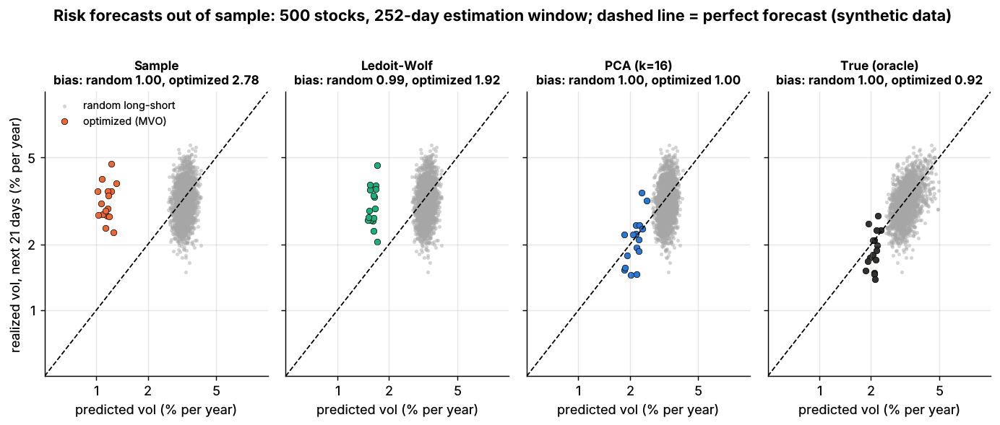

Risk models¶
TL;DR
- A risk model forecasts the covariance of 1,000–3,000 stocks from a few dozen factors plus one specific variance per stock: Σ = XFX′ + Δ. Millions of unknowns shrink to thousands.
- Three families: fundamental (BARRA-style industries and styles, factor returns from a daily cross-sectional regression), statistical (principal components) and hybrids.
- The craft is in the time series: half-lives (shorter for volatilities than correlations), Newey–West, a volatility-regime adjustment, shrunk specific risk.
- Grade it with the bias statistic (std of return ÷ forecast risk; 1 = unbiased) on optimized portfolios. In Lab 14 the sample covariance scored 1.00 on random portfolios and 2.78 on optimized ones (synthetic lab result).
- Alpha the model cannot see looks diversifiable, so the optimizer overloads it: the alignment problem.
Level: Core · Pipeline stage: portfolio · Last verified: 2026-11
| Field | Value |
|---|---|
| Purpose (the question it answers) | How risky is this portfolio, and how much of the risk is factor bets versus stock-specific bets? |
| Inputs → Outputs | returns, industry codes, style descriptors, market caps → exposures X (N×K), factor covariance F, specific variances Δ; risk and its decomposition for any portfolio |
| Used by strategies | Cross-sectional alpha · Stat arb · Factor-residual · Reversal · ML short-horizon · Fundamental signals · Revisions · Alternative data · Factor investing · Momentum · Value, quality, low vol · Factor timing and crowding · Carry and cross-asset premia · Trend following |
| Latency / compute regime | overnight batch (vendor files land before the open); one portfolio's risk takes well under a millisecond [Estimate] (one N×K product) |
| Key parameters | K: 10–20 statistical, ~70–100 fundamental factors; half-lives 42–252 days (volatility), 200–756 (correlation); Newey–West lags 0–10 |
| Main failure modes | underpredicting optimized portfolios; lagging regime shifts; alpha factors missing from the model; stale exposures |
| Lab | Lab 14 |
Intuition¶
The covariance matrix of 3,000 stocks has 4,501,500 distinct entries; a year of daily returns supplies 756,000 numbers. The covariance card shows what goes wrong if you estimate it directly.
A factor model assumes stocks co-move only through shared exposures to a few drivers: market, industry, size, momentum, value. With 75 factors, exposures are observed, the factor covariance has 2,850 entries and specific risk adds 3,000. The model is a chart of accounts for risk: each unit of variance is booked to a factor line or the specific line, and P&L attribution later reconciles against the same ledger.
Where it sits in the pipeline¶
flowchart LR
ret["Daily returns"] --> rm
fund["Industry codes, fundamentals,<br/>market caps"] --> rm
p2["P2 covariance estimation<br/>and shrinkage"] --> rm
rm["P1 risk model<br/>exposures, factor covariance,<br/>specific risk"] --> d3["D3 signal neutralization"]
rm --> p3["P3 optimizer"]
rm --> p7["P7 risk budgets and limits"]
rm --> l1["L1 P&L attribution"]
style rm fill:#ffd54f,stroke:#333The algorithm¶
- Exposures X (N×K): industry dummies, style z-scores standardized across stocks each day, and a market or country column.
- Factor returns: each day, regress stock returns on X by weighted least squares, giving K factor returns and N specific (residual) returns.
- Factor covariance F: exponentially weighted (EWMA), with a shorter half-life for volatilities than correlations, plus Newey–West terms and a volatility-regime multiplier.
- Specific risk Δ: EWMA of squared residuals, shrunk toward the average of similar stocks.
- Statistical alternative: the top k principal components of trailing returns are the factors; leftover variance is specific (Lab 14's
pca_factor_cov). - Use: portfolio variance h′XFX′h + h′Δh; validate with the bias statistic.
flowchart TD
ex["Exposures X<br/>industries, styles, market"] --> reg["Cross-sectional WLS<br/>one regression per day"]
r["Stock returns"] --> reg
reg --> f["Factor returns"]
reg --> u["Specific returns"]
f --> F["Factor covariance F<br/>EWMA, Newey-West,<br/>regime adjustment"]
u --> D["Specific risk Delta<br/>EWMA, Bayesian shrinkage"]
F --> S["Sigma = X F XT + Delta"]
D --> S
ex --> Simport numpy as np
def factor_returns_wls(r, X, mcap):
"""One day of a BARRA-style model (sketch; Lab 14 has no fundamental model).
r: (N,) returns, X: (N x K) exposures. sqrt(cap) weights proxy 1 / specific variance."""
w = np.sqrt(mcap)
XtW = X.T * w # K x N
f = np.linalg.solve(XtW @ X, XtW @ r) # today's factor returns (K,)
return f, r - X @ f # ...and specific returns (N,)
def ewma_cov(F, hl_vol=84, hl_corr=504):
"""K x K covariance from T x K daily factor returns, oldest row first.
Short half-life for volatilities, long one for correlations (USE4S: 84 / 504 days)."""
def ew(hl):
wts = 0.5 ** (np.arange(len(F))[::-1] / hl) # newest day gets weight 1
return (F * (wts / wts.sum())[:, None]).T @ F
V, C = ew(hl_vol), ew(hl_corr)
corr = C / np.sqrt(np.outer(np.diag(C), np.diag(C)))
vol = np.sqrt(np.diag(V))
return corr * np.outer(vol, vol) # Newey-West and regime scaling omitted
def pca_factor_cov(returns, n_factors=16, min_specific_var=1e-6):
"""Statistical model as in Lab 14: Sigma = L'L + diag(specific_var)."""
X = returns - returns.mean(axis=0)
S = X.T @ X / (len(X) - 1) # sample covariance (N x N)
eigval, eigvec = np.linalg.eigh(S)
top = np.argsort(eigval)[::-1][:n_factors]
L = (eigvec[:, top] * np.sqrt(eigval[top])).T # (k, N) loadings times factor vol
specific = np.maximum(np.diag(S) - (L ** 2).sum(axis=0), min_specific_var)
return L, specific # the lab wraps these in FactorCov
def portfolio_variance(w, L, specific_var):
return ((L @ w) ** 2).sum() + (w ** 2) @ specific_var # factor part + specific part
def bias_statistic(realized_returns, predicted_vol):
"""Std of r / sigma_pred. 1 = unbiased; > 1 = risk underpredicted."""
z = np.asarray(realized_returns) / np.asarray(predicted_vol)
return float(np.std(z, ddof=1))
Worked example with numbers¶
Illustrative. A dollar-neutral book holds 400 names at 0.5% of capital each (gross 200%). Exposures: market beta 0.02, momentum 0.15, tech 0.05. Annual factor volatilities: market 16%, momentum 10%, tech 12%; momentum–tech correlation 0.3, others 0. Specific volatility is 30% for every stock.
| Line | Calculation | Variance (×10⁻⁴) | Share |
|---|---|---|---|
| Market | (0.02 × 0.16)² | 0.10 | 0.8% |
| Momentum | (0.15 × 0.10)² | 2.25 | 18.4% |
| Tech | (0.05 × 0.12)² | 0.36 | 2.9% |
| Momentum × tech | 2 × 0.3 × 0.015 × 0.006 | 0.54 | 4.4% |
| Specific | 400 × 0.005² × 0.30² | 9.00 | 73.5% |
| Total | 12.25 | 100% |
Forecast volatility is √0.001225 = 3.50% a year, 0.22% a day. Specific risk dominates, as intended, but a modest momentum tilt carries almost a fifth of the variance.
If daily P&L over the next 252 days has a standard deviation of 0.29%, the bias statistic is 0.29 ÷ 0.22 = 1.32, outside the 1 ± √(2/252) = 1 ± 0.09 band: realized risk ran about a third above forecast.
Key parameters and how practitioners tune them¶
MSCI's published USE4 settings, by horizon [Verified]:
| Setting | USE4S (short) | USE4L (long) | USE4D (daily) |
|---|---|---|---|
| Factor volatility half-life | 84 days | 252 | 42 |
| Factor correlation half-life | 504 days | 504 | 200 |
| Newey–West lags, volatility / correlation | 5 / 2 | 5 / 2 | 0 / 0 |
| Volatility-regime half-life | 42 days | 168 | 4 |
| Specific-risk Bayesian shrinkage | 0.1 | 0.1 | 0.05 |
Shorter horizons get shorter half-lives and no Newey–West, since a one-day forecast adds up no autocorrelated days. Correlations get longer half-lives: thousands of factor pairs need more effective data (an EWMA's effective sample is about 2.9 half-lives) or F turns singular.
- Statistical factors: 10–20
[Lore]; Avellaneda and Lee used 15 eigenportfolios[Verified]. Lab 14's 16 matches its simulator; real data has no true k. - Regression weights: √(market cap), used by USE4 as a proxy for inverse specific variance
[Verified]. - Tuning: pick half-lives by bias statistics across portfolio types, calm and stressed years; match the model's horizon to the holding period.
Textbook version vs what firms actually do¶
- Lineage: Barra models descend from Rosenberg (1974), who modeled covariance through company descriptors
[Verified]. - Fundamental vs statistical vs macro: on 779 US stocks (monthly, 1985–1993) they explained 42.6%, 39.0% and 10.9% of return variance; macro factors added nothing to the fundamental model
[Verified](Connor 1995). Statistical factors are unlabeled and rotate, but catch transient themes (a crowded trade) fast. A hybrid adds a few statistical factors estimated on a fundamental model's residuals[Lore]. - Commercial models: MSCI's Barra USE4 (2011) has 60 GICS-based industries, 12 styles and a country factor, regresses on √cap weights and lets a firm sit in up to five industries
[Verified]. MSCI's newer US Total Market suite adds a long-term model (16 styles, 2014) and a trading model (24 styles including sentiment, short interest and one-day reversal, plus option-implied volatility, 2015)[Verified]; we found no public "USE5". Axioma, sold by SimCorp, offers fundamental, statistical and macroeconomic variants at trading, short and medium horizons, plus custom models[Verified]. Bloomberg also sells factor models[Verified]. - Custom vs vendor: large quant funds tend to trade on in-house models and keep a vendor model for limits, investor reporting and talking to prime brokers
[Lore]. A shared vendor model means shared neutralization, which feeds crowding[Lore]. - Optimization bias: USE4 includes an "Optimization Bias Adjustment" for under-forecast optimized portfolios
[Verified]. Menchero, Wang and Orr (2012) find the lowest-volatility eigenportfolios carry the largest underprediction and correct them by simulation[Verified].
How to tell if it's working¶
The bias statistic is the standard deviation of realized return ÷ forecast volatility. Over T observations, 1 ± √(2/T) is consistent with an unbiased forecast [Estimate] (a standard deviation's sampling error is about 1/√(2T)); noisy but unbiased forecasts score about 1.03 [Verified] (Menchero 2017). Test random, factor-mimicking and optimized portfolios and the live book.

Lab 14: grey dots are random dollar-neutral portfolios, colored dots the optimizer's portfolios; the dashed line is a perfect forecast (synthetic data).
Synthetic lab result: on random long-short portfolios all four estimators score 0.99–1.00; on optimized portfolios, sample covariance 2.78, Ledoit–Wolf 1.92, 16-factor PCA 1.00, true covariance 0.92. Random portfolios cannot tell good from bad; optimized ones can. The lab flatters PCA: exposures never drift and the true factor count is known. Real models need explicit fixes such as MSCI's.
Failure modes and pitfalls¶
- Error maximization: the optimizer seeks directions with underestimated risk, so a model fine "on average" fails for the one portfolio you hold.
- Alpha–risk misalignment: an alpha factor absent from the model looks like diversifiable specific risk, so the optimizer builds a hidden factor bet; an alpha that is a risk factor gets penalized: "risk factors eat alphas"
[Reported](Lee & Stefek 2008). Fixes include an alpha alignment factor (Saxena & Stubbs 2013) and custom factors[Reported](Ceria, Saxena & Stubbs 2012). - Regime shifts: long half-lives lag a volatility spike. In August 2007 the shared risk was a crowded unwind no factor described (failure gallery).
- Horizon mismatch: a daily model for a monthly book understates risk when returns are autocorrelated.
How practitioners talk about it¶
- "We're flat the Barra styles." → Exposures to the vendor's style factors are near zero.
- "Bias stat on the optimized book is 1.4." → Realized risk ran 40% above forecast for the portfolio that matters.
- "That's a stat factor, it'll rotate." → A PCA factor with no stable label.
- "The optimizer found a factor we don't model." → A hidden common bet drove returns.
- "Vol half-life is too long for this tape." → Forecasts lag the current regime.
Questions you could ask a quant about this¶
- Do you trade on a vendor model, your own, or both?
- What share of your risk is factor versus specific?
- What is your bias statistic on optimized portfolios, not just the live book?
- How do you handle alpha factors that are not in the risk model?
- 🔒 Which statistical factors do you add on top of the fundamental ones?
Go deeper¶
Math: the factor model, the regression, Newey–West and the bias band
With \(r_t = X_t f_t + u_t\), \(\operatorname{cov}(f) = F\) and diagonal \(\operatorname{cov}(u) = \Delta\):
Daily weighted least squares with \(W = \operatorname{diag}(\sqrt{\text{cap}_i})\):
A country factor plus all industry dummies makes X collinear; USE4 constrains cap-weighted industry returns to sum to zero [Reported].
H-day variance from autocorrelated daily returns (Newey–West, L lags):
Volatility-regime adjustment, roughly: EWMA-average the daily cross-sectional bias \(B_t^2 = \tfrac1K\sum_k (f_{k,t}/\sigma_{k,t})^2\) and scale all factor volatilities by its square root [Reported].
Bias band: for i.i.d. standard normal \(z_t\), the sample standard deviation has standard error \(\approx 1/\sqrt{2T}\), so 95% lies in \(1 \pm \sqrt{2/T}\); fat tails widen it.
Cost: a dense covariance needs \(O(N^2)\) memory and \(O(N^3)\) to invert; the factor form needs \(O(NK)\) and inverts in \(O(NK^2)\) (Woodbury).
Related pages¶
- Covariance estimation and shrinkage · Mean-variance optimization · Position sizing and risk budgeting
- Live monitoring and P&L attribution
- Cross-sectional alpha and neutralization · Factor investing fundamentals
- Walkthrough: a mid-frequency stat-arb book
Sources¶
- [Verified] MSCI (2011). "Barra US Equity Model (USE4)" fact sheet. https://www.msci.com/documents/10199/242721/Barra_US_Equity_Model_USE4.pdf (accessed 2026-11)
- [Verified] MSCI (2012-07). "USE4S, USE4L and USE4D Data Sheets: Barra U.S. Equity Model" (hosted by Arcana). https://help.arcana.io/en/articles/14982987-msci-barra-us-equity-model-use4-methodology-handbook-pdf (accessed 2026-11)
- [Verified] MSCI (2014-12 and 2015-03). Datasheets: "Barra US Total Market Equity Model for Long-Term Investors" and "Barra US Total Market Equity Trading Model" (hosted by Arcana). https://help.arcana.io/en/articles/14983113-msci-barra-us-total-market-equity-trading-model-usfastd (accessed 2026-11)
- [Verified] Menchero, J. & Nagy, Z. (2013-03). "Risk and Return of Factor Portfolios: The Impact of Regression Weighting." MSCI Research Insight. https://www.msci.com/documents/10199/cb704602-b417-4077-a277-c170501a70d7 (accessed 2026-11)
- [Verified] Menchero, J., Wang, J. & Orr, D. J. (2012). "Improving Risk Forecasts for Optimized Portfolios." Financial Analysts Journal 68(3), 40–50. https://doi.org/10.2469/faj.v68.n3.5 (accessed 2026-11)
- [Verified] Menchero, J. (2017-01). "Multi-Asset Factor Covariance Matrices" (Bloomberg MAC2), slides, Boston QWAFAFEW. https://boston.qwafafew.org/wp-content/uploads/sites/3/2017/01/MAC2-Slide-Deck-Jan-2017-Menchero.pdf (accessed 2026-11)
- [Verified] Connor, G. (1995). "The Three Types of Factor Models: A Comparison of Their Explanatory Power." Financial Analysts Journal 51(3), 42–46. https://doi.org/10.2469/faj.v51.n3.1904 (accessed 2026-11)
- [Verified] Rosenberg, B. (1974). "Extra-Market Components of Covariance in Security Returns." Journal of Financial and Quantitative Analysis 9(2), 263–274. https://doi.org/10.2307/2330104 (accessed 2026-11)
- [Verified] Newey, W. K. & West, K. D. (1987). "A Simple, Positive Semi-Definite, Heteroskedasticity and Autocorrelation Consistent Covariance Matrix." Econometrica 55(3), 703–708. https://doi.org/10.2307/1913610 (accessed 2026-11)
- [Verified] Avellaneda, M. & Lee, J.-H. (2010). "Statistical arbitrage in the US equities market." Quantitative Finance 10(7), 761–782. https://doi.org/10.1080/14697680903124632 (accessed 2026-11)
- [Verified] SimCorp. "Axioma factor risk models" (product page). https://www.simcorp.com/solutions/axioma-solutions/axioma-factor-risk-models (accessed 2026-11)
- [Reported] Ceria, S., Saxena, A. & Stubbs, R. A. (2012). "Factor Alignment Problems and Quantitative Portfolio Management." Journal of Portfolio Management 38(2), 29–43. https://doi.org/10.3905/jpm.2012.38.2.029 (accessed 2026-11)
- [Reported] Lee, J.-H. & Stefek, D. (2008). "Do Risk Factors Eat Alphas?" Journal of Portfolio Management 34(4), 12–25. https://doi.org/10.3905/jpm.2008.709976 (accessed 2026-11)
- [Reported] Saxena, A. & Stubbs, R. A. (2013). "The alpha alignment factor: a solution to the underestimation of risk for optimized active portfolios." Journal of Risk 15(3), 3–37. https://doi.org/10.21314/JOR.2013.261 (accessed 2026-11)